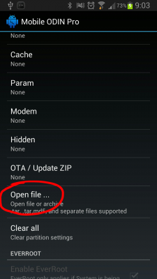

1) Скачиваем кастомное ядро (Формат файла ядра- .tar или .tar.md5), возможен незапакованный вид- zImage)
2) Закидываем на телефон файл ядра
(Положим данный файл в корневую директорию накопителя или карты памяти)
После открытия программы, она доустанавливает еще одно .apk в зависимости от вашего устройства.
Если у вас не скачивается дополнительный файл, установите его вручную, версию для вашего девайса брать на XDA.
3) Открываем Mobile Odin Pro
4) В Mobile Odin Pro выбираем пункт Open file ...

5) Выбираем тип памяти, из которого программа будет считывать наш файл кастомного ядра (Выбираем тот тип памяти, куда заливали файл кастомного ядра в П.2).
6) В появившемся окне находим и выбираем ранее записанный файл кастомного ядра формата .tar или .tar.md5 или не запакованный файл ядра zImage (Который мы записывали в корневую директорию карты памяти\накопителя в пункте 2. Его содержимое подставляется в соответствующие разделы программы )
7) Нажимаем клавишу подтверждения "ОК".
8) Проверяем, во всех ли разделах есть данные.